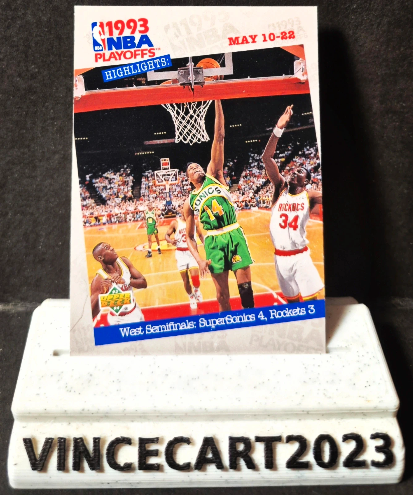

Carte NBA Playoffs 1993 Highlights #189 – Seattle SuperSonics vs Houston Rockets – Upper Deck
1,0 €
Vends carte NBA Playoffs 1993 Highlights #189 de la collection Upper Deck.
🏀 Collection : Upper Deck 1993-94
🏀 Série : 1993 NBA Playoffs Highlights
🏀 Numéro : #189
🏀 Match : Seattle SuperSonics 4 – Houston Rockets 3 (Demi-finales de Conférence Ouest)
🏀 Avec Sam Perkins (#14) face à Hakeem Olajuwon (#34)
🏀 Carte originale vintage des années 90
🏀 État : Très bon état (voir photos)
Une superbe carte souvenir des Playoffs NBA 1993, mettant en avant une série historique entre les Seattle SuperSonics et les Houston Rockets. Un incontournable pour les collectionneurs de cartes NBA vintage.
📦 Carte expédiée sous sleeve
Disponibilité à confirmer sur Vinted.